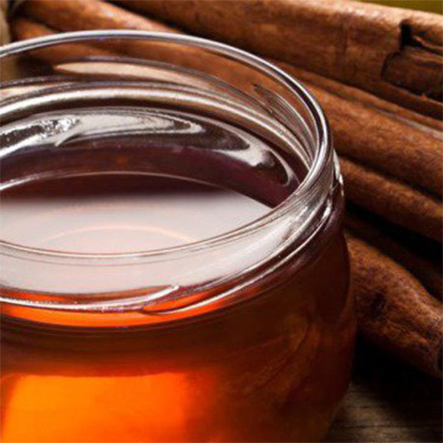
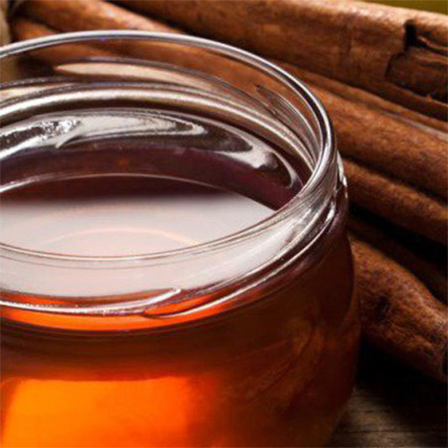
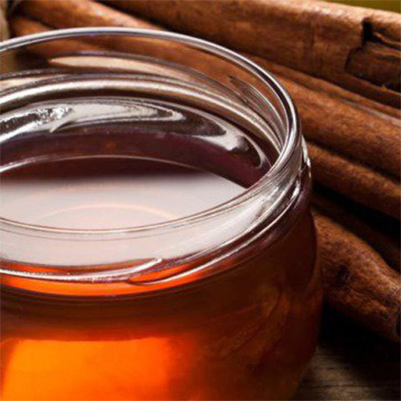

Fill your house with beautiful and very smelly cinnamon candles for your soul and family. Have a sparkling christmas night with people and cinnamon candles all over the place.
Holidays are the perfect season to start making your own scents for the home, with cinnamon, nutmeg and pine all being firm favorites this time of year. So impress your friends and family with a wonderfully scented home, creating the perfect scene for any Holiday occasion, whether that be a family get together, a formal dinner party or a cozy night in by the fire.

Fill your house with beautiful and very smelly cinnamon candles for your soul and family. Have a sparkling christmas night with people and cinnamon candles all over the place.